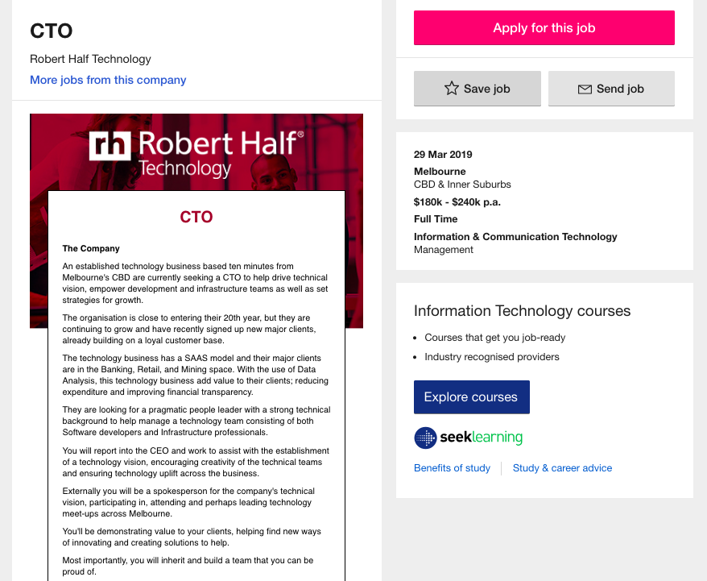

IT World
My Interests
My fascination for IT began in high school, when I chose the subject as an elective in year 11. During that year, I learnt a range of skills such as designing a website and creating my own simple game. As I grew up, I noticed a lot of successful companies thrived through the advancement of technology. This is when I began to become intrigued in Elon Musk, the founder of Tesla and other marvelous technology achievements.
RMIT was one of my three choices for universities for pursuing a course in information technology. Through constant discussion with my family and friends, I eventually decided to choose RMIT. It is also a well renown university that specialises in technology and design, offering students with a wide range of resources.
During my next three years of studies, I am unsure what I will discover, but I hope to learn a vast variety of industry-based skills to help me achieve my future career path in the fast-paced information technology industry.
Ideal Job
Job qualifications: The role of a chief technical officer does not only require a high level of technological knowledge but a strong individual who is confident and creative and will act as a leader to guide their team. Qualification of the job consist of background knowledge within the branches of software development and having experienced interaction with powerful partners. The job is also searching for a determined individual who has a passion for leadership, which can help a company grow. This link brings you to the seek job advertisement.
Job description: A description of a chief technical officer is an individual who oversees a company at an executive level, managing different project, ensuring everyone is on the correct path. The individual is also responsible of developing strong connection with their team as well as other partnering companies to expand and grow the organisation. I was very intrigued by the "spokesperson" section of the job description because been in charge of company seems like a thrilling position as you are responsible for endeavouring the business to success.
Current qualifications: My current qualifications consist of the early stages of programming and the basic concepts of databases. I have quite a lot of experience with teamwork and leadership as I joined a variety of clubs during high school.
Future advancements: To achieve my ideal job, my plan is to continue my current programming course and further down the path select software development as a secondary or main course. I would also try and choose project management in semester 2 as an elective or any sort of management subject to learn about the basics of handling an organisation.